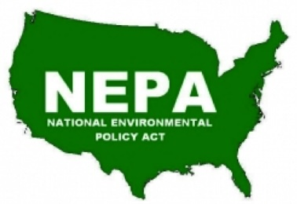

NEPA
National Environmental Protection Act
Claire Zurowick and Brooke Jones
What is NEPA
NEPA is an environmental law that was established in 1969. The purpose of this law is so that federal agencies have to state and understand the consequences from the environmental impacts their projects can potentially have on the place the project is being done. This act requires Environmental Assessments or Environmental Impact Statements and for the company to follow through with alternate plans rather than the ones that can cause environmental harm.

Ka'ula island, Hawaii
This is a small islet off the shore of Ni'ihau island, Hawaii. It is home to a 158 acre endangered seabird sanctuary and is also a traditional cultural space and is eligible for protection under not only NEPA but also the National Register for Historic Places. It is also surprisingly the summit of a submerged shield volcano which explains its cone shape and grey color. The volcano is considered dormant because it has not erupted in the past 12,000 years.


- Ka'ula Island has been under federal jurisdiction since 1924
- The U.S. Navy has been using Ka'ula Island for Naval activites since 1952
- These Naval activites included gunnary trainging and non-explosive bombing
- It was determined through NEPA that the actvitives by the Navy on Ka'ula Island were casuing adversive effects from debris
- The Island is now listed as both a Traditional Cultural Place (TCP) and on the National Register of Historic Places (NRHP)
- The Navy can now only conduct these training exercises on the Island with permission from the Commander of the U.S. Pacific Fleet and with consultation from Native Hawaiin Organizations
Sequoia National Park
Located in parts of California and the Southern Sierra Nevada Mountain Range, this beautiful park is home to Homer's Nose. 369 sequoia trees were killed in the 2020 Castle Fire, which affected this remote area of the park. It is rarely frequented with about 3-4 visiting parties per year. NEPA is being used to help with reimplementation purposes to bring back sequoias in the area.


- Wildfires in 2020 and 2021 burned down seqouia trees which caused substantial damage
- Without NEPA a bill was proposed called the "Save Our Sequoias Act"
- This bill undermines NEPA and the Wilderness Act that is already in place
- The Save Our Seqouias Act would let the unregulated, Grand Seqouia Land Coalition, replace the U.S. Forest Service and National Park Service in overseeing the forest which could cause more damages if not properly taken care of
Mackinac Island Line 5 Pipeline
The Mackinac Bridge is a historic bridge that connects Mackinac City to Mackinac Island in Michigan's Upper Peninsula. The bridge goes over the Straits of Mackinac which is where Lake Michigan and Lake Huron connect. Under this bridge lies the Line 5 Pipeline. Groups are worried that the U.S. Army Corps of Engineers did not properly complete an analysis of the potential damages that the pipeline could cause environmentally.


- On May 30, 2025 the U.S. Army Corps released an Environmental Impact Statement (EIS) for a project called Enbridge Energy Line 5 Tunnel
- This proposed project would be 3.6 miles that would transport about 540,000 barrels of oil and natural gases per day
- The proposed project would be replacing the original Line 5 Tunnel
- The Environmental Law and Policy Center (ELPC) and Michigan Climate Action Network (MiCAN) are groups that are worried about the potential environmental damages this new proposal could cause
- The ELPC belives that the U.S. Army Corps should complete a deeper review than what was completed on the grounds of NEPA
NEPA Today
The intended benefit of NEPA is to make agencies evaluate the environmental, economic, and social impact a project could have when conducted.
What are the NEPA Steps
- An environmental impact statement must be written(U.S. EPA 2013)
- An environmental assessment (EA) must be conducted(U.S. EPA 2013)
- Sometimes a categorical exclusion (CE) is applied if the project doesn't have any significant consequences on the environment(U.S. EPA 2013)
- Sometimes agencies also get the opportunity to evaluate the NEPA site in stages called tierring(U.S. EPA 2013)
How Can You Be Involved
NEPA protects Indigenous, Tribal, and low-income communities because it protects the people whose land is near the site being evaluated. Within NEPA legislation there is mandatory Indigenous consultation. There is also evaluating environmental justice (EJ) to see if the project will disproportionately affect low-income communities. Most NEPA projects are through cultural resource management (CRM) and with this culturally or historically significant sites have the possibility to be found (DeGood 2018)
- Depending on the culturally significant site it could be protected or become enacted under the National Register of Historic Preservation (NRHP) or the Native American Graves Protection and Reparation Act (NAGPRA).(DeGood 2018)
- However, there are many other legislations that could be included within the culturally significant site.
Descendent communities can also demand alternative approaches to proposed projects if they believe it would negatively affect their community or ancestors.(Degood 2018)
How Can NEPA Be Improved
NEPA is an umbrella term and allows for the protection of our environment during projects. NEPA legislation already is fairly steady and doesn't have too many public complaints on how it is run. However, it does slow down progess on projects and can delay them if a site is found to be significant. One way NEPA could be improved would be to be able to speed up the process while still maintaining its effectiveness in protecting our environment. Most legislative processes are slow for a reason but by slighlty speeding up NEPA we could be able to create projects in a more timely manner that do benefit communities.(Steps to Modernize and Reinvigorate NEPA 2015)
How Does NEPA Affect Archaeologists
NEPA provides another roles for archaeologists in CRM. With NEPA archaeologists conduct EA and EIS procedures to make sure a project doesn't negatively effect an environnment. NEPA has arcaheologists look further into the effects a project may cause on a site outside of it being impactful on Indegenous culture or a NRHP by looking at the environmental impact.
Sources
- DeGood, K. (2018, January 16). The Benefits of NEPA: How Environmental Review Empowers Communities and Produces Better Projects. Center for American Progress. https://www.americanprogress.org/article/benefits-nepa-environmental-review-empowers-communities-produces-better-projects/
- EPA. (2013, July 31). What is the National Environmental Policy Act? US EPA. https://www.epa.gov/nepa/what-national-environmental-policy-act
- Forest and Public Lands Stewardship. (2026, March 20). House Unanimously Passes Save Our Sequoias Act, Senate Introduces Companion Bill - Rural County Representatives Of California. Rural County Representatives of California. https://www.rcrcnet.org/general/house-unanimously-passes-save-our-sequoias-act-senate-introduces-companion-bill/
- Hayes, J. (2025). Let the Line 5 Tunnel project go ahead. Mackinac Center. https://www.mackinac.org/blog/2025/let-the-line-5-tunnel-project-go-ahead
- McClary, J. (2025). Challenges to the National Environmental Policy Act | National Trust for Historic Preservation. Savingplaces.org. https://savingplaces.org/stories/challenges-to-the-national-environmental-protection-act
- National Park Service. (2023, September 12). Giant Sequoias and Fire - Sequoia & Kings Canyon National Parks (U.S. National Park Service). Www.nps.gov. https://www.nps.gov/seki/learn/nature/giant-sequoias-and-fire.htm
- ParkPlanning - Implementation: Homer’s Nose Grove. (2023). Nps.gov. https://parkplanning.nps.gov/document.cfm?documentID=132519
- Seach, Dr. J. (2026). Kaula Volcano, Hawaii | Dr John Seach. Volcanolive.com. https://volcanolive.com/kaula.html
- Steps to Modernize and Reinvigorate NEPA. (2015). The White House. https://obamawhitehouse.archives.gov/administration/eop/ceq/initiatives/nepa
- The National Environmental Policy Act (NEPA) | National Preservation Institute. (2025). Npi.org. https://www.npi.org/national-environmental-policy-act-nepa
- U.S. Navy NEPA Project Website > Current Projects > Land-Based Ranges > PMRF Land-Based Training and Testing EA > Ka'ula Island. (2018). Navy.mil. https://www.nepa.navy.mil/Current-Projects/Land-Based-Ranges/PMRF-Land-Based-Training-and-Testing-EA/Kaula-Island/
- US EPA. (2013, July 31). National Environmental Policy Act Review Process. US EPA. https://www.epa.gov/nepa/national-environmental-policy-act-review-process